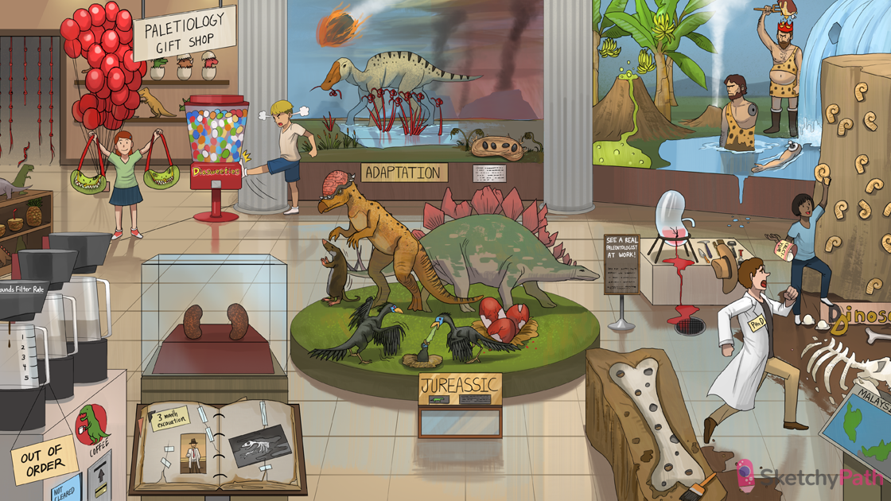

Fossilized kidney-shaped eggs: chronic kidney disease (CKD) (kidneys appear bilaterally shrunken with a red-brown, diffusely granular surface)
Empty grounds filter rate: CKD presents with decreased GFR
Coffee levels 1-5: the 5 stages of CKD are defined by GFR, with stage 5 being end-stage renal disease requiring dialysis
Credit card: CKD presents with increased creatinine (decreased GFR → decreased Cr clearance)
Photo album: CKD presents with albuminuria due to kidney damage
3 month expedition: CKD is diagnosed by 3 months of reduced GFR or elevated urine albumin
DiaSweeties candies: poorly controlled diabetes one of the MOST COMMON causes of CKD (due to microvascular damage)
High pressure steam: chronic hypertension is one of the MOST COMMON causes of CKD (due to microvascular damage)
Frayed glomerular knots: chronic glomerulonephritis can cause CKD
Kidney shaped bunch of balloons: polycystic kidney disease can cause CKD
Constricting red kidney straps: bilateral renal artery stenosis can cause CKD (due to ischemic nephropathy)
Pineapples: chronic pyelonephritis can cause CKD (due to progressive renal scarring)
Chomping glomerular reeds: initial injury leading to CKD
Tall glomerular reeds in the river: the remaining healthy glomeruli increase filtration to preserve GFR (adaptive hyperfiltration)
Dead glomerular reeds: the remaining hyperfunctioning glomeruli eventually become damaged by the extra load (labs start to show CKD)
Dry sclerotic glomerular reeds: CKD shows advanced scarring of the glomeruli on histology
Fibrotic kidney-shaped nest: CKD eventually leads to interstitial fibrosis
Bubbling acid: One of the features of chronic kidney disease is metabolic acidosis from impaired hydrogen excretion, impaired bicarbonate reabsorption, and accumulation of uric acid
Banana tree: Hyperkalemia in chronic kidney disease is caused both by decreased filtration of potassium due to decreased GFR and may even be caused or exacerbated by metabolic acidosis
Caveman in water: Decreased filtration and decreased urine output can lead to overt fluid overload, which can then cause acute heart failure and both diffuse and pulmonary edema
Wax arm falling: One of the prominent features in the urine sediment of chronic kidney disease patients is waxy casts, which are very non-specific
Steam geyser: While hypertension is often a cause of chronic kidney disease, fluid overload in chronic kidney disease can worse hypertension to dangerous levels, even calling for emergent dialysis!
Cracked kidney beaker: Because the kidney is responsible for erythropoietin production, decreasing renal function can lead to a normocytic anemia caused by falling erythropoietin levels
“P” snails: Patients with chronic kidney disease often have hyperphosphatemia, caused both by decreased filtration and bone resorption in CKD-bone mineral disease
Calci-yum ice cream: The kidneys are responsible for the production of vitamin D and decreasing renal function leads to decreased levels of vitamin D and calcium
D in sign falling: The renal juxtaglomerular apparatus contains a-1-hydroxylase, which is the final step in the production of 1,25-dihydrocholecalciferol (Vitamin D). Decreased renal production of Vitamin D is the cause of hypocalcemia in renal disease
PthD: In response to hypocalcemia and hyperphosphatemia, the hypothalamus releases PTH, which raises calcium levels by increasing bone resorption. This can lead to several CKD-bone mineral diseases
Bone with dirt-filled holes: Another form of Chronic Kidney Disease-Bone Mineral Disease is osteomalacia, in which bone resorption leads to cystic lesions in bone that sometimes fill with microhemorrhage, giving rise to pathognomonic “brown lesions”
Skeleton in dirt: One of the consequences of secondary hyperparathyroidism is osteomalacia, which is caused by decreased bone mineralization both from secondary hyperparathyroidism and hypocalcemia
JUREASSIC plaque: One of the more serious complications of chronic kidney disease is buildup of urea, which causes several pathologic processes
Bird vomiting into other bird: One of the early signs of uremia is nausea and vomiting
Shaky wings on bird: Uremia can cause serious neurologic effects, with one the minor being tremulousness referred to as asterixis
Broken plates on stego: Uremia causes platelet dysfunction, which can lead to pathologic hemorrhage throughout the body
Cracked eggs in nest: Uremia can lead to simple serous pericarditis; however, platelet dysfunction with more severe uremia can cause hemorrhage into the pericardial sacs, causing hemorrhagic pericarditis
Head banging dino: As uremia becomes more pronounced, neurologic effects do as well and can result in encephalopathy, seizure, coma, and even death
Little itchy mammal: As before, uremic frost causes severe urticaria and can lead to poorly healing skin lesions from scratching.
Fat caveman: One of the other, less well understood, features of chronic kidney disease is hyperlipidemia, especially hypertryglyceridemia